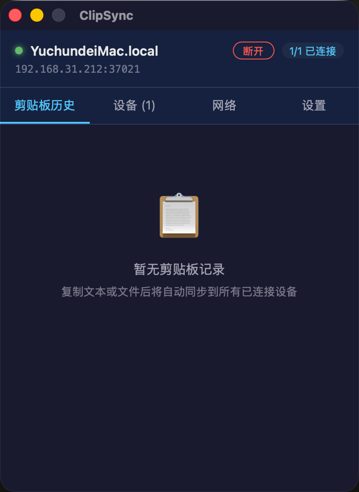
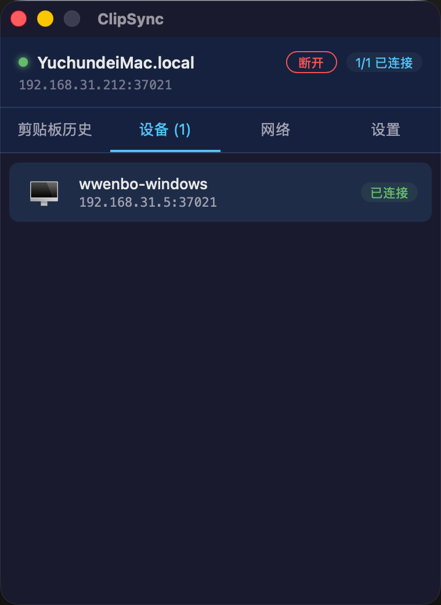
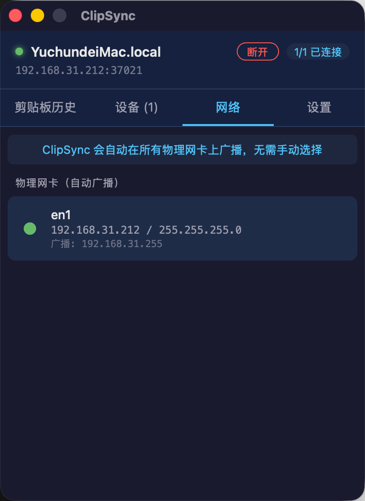

ClipSync 让你的多台设备共享同一个剪贴板，省去手动传输的繁琐。
无需手动配置 IP 地址，UDP 广播自动发现同一局域网内的所有设备，几秒内即可建立连接。
复制文本、图片或文件后自动同步到所有已连接设备，无需任何额外操作，真正实现"复制即同步"。
支持文件和文件夹的跨设备传输，递归复制整个目录结构，大文件分片传输高效稳定。
保留最近 20 条剪贴板记录，包括本机复制内容。每条记录都有独立复制按钮，随时回溯使用。
可配置的快捷键（默认 Cmd+Shift+V）快速打开/隐藏窗口，不打断工作流。
支持中文、英语、日语、韩语、德语、法语、西班牙语、葡萄牙语、俄语 9 种语言界面切换。
零配置、零注册，安装即用。
在 Mac 和 Windows 上分别安装 ClipSync 并启动。应用会自动在后台运行，显示在系统托盘中。
确保设备在同一局域网内，ClipSync 会自动发现并连接对方设备。状态栏显示"已连接"即可开始。
在任意设备上复制文本或文件，内容会自动同步到所有已连接设备。在剪贴板历史中点击即可使用。
深色主题、最小化设计，让你专注工作。



基于 Tauri v2 构建，轻量、安全、高性能。
关于 ClipSync 的一些常见疑问。
免费、开源、隐私优先
需要 macOS 10.15+ / Windows 10 64 位 · 无需联网 · 完全本地运行
网络端口：UDP 37020 · TCP 37021